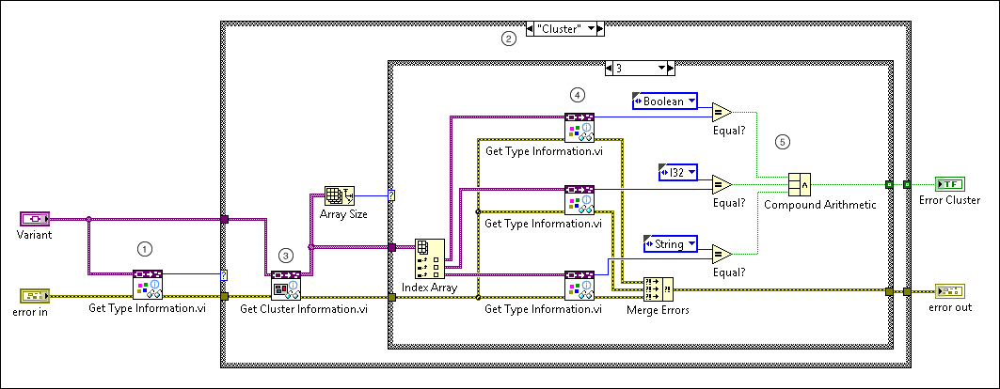

To check if a variant contains a specific data type, use the Data Type Parsing VIs to retrieve data type information. Unlike the Variant to Data function, the Data Type Parsing VIs do not retrieve the actual data stored in the variant. Instead, these VIs return information about the data type, so you do not have to manipulate the stored data to return information about it.
If you know the data type you want to check against the data type stored in a variant, you can use the Data Type Parsing VIs to compare these data types. For example, if an application parses arbitrary front panels to retrieve the values of the controls, you can use the example in this topic to identify the variant controls that contain error clusters.
Use the following block diagram objects to retrieve data type information stored in a variant.
| Get Type Information VI | Case Structure | Get Cluster Information VI | ||
|
Create the following block diagram to check a variant for a known data type. This example checks and compares the data types stored in a variant to error cluster elements.
The following list describes important details about the previous diagram.
 |
Use the Get Type Information VI to return an enum that specifies the data type stored in the variant. In the example, the data type is a cluster. |
 |
Edit the selector label of the Case structure to correspond to the known data type. In the example, the label and data type are both "Cluster." |
 |
Use the Get Cluster Information VI to return an array containing the cluster element data types. Once you know the data type contained in a variant, you can use data type specific VIs from the Data Type Parsing palette, such as the Get Numeric Information or Get Fixed-Point Information VIs, to return more specific data type information. |
 |
Edit the selector label of the inner Case structure to correspond with the known number of elements in the error cluster data type. |
 |
Use the Get Type Information VI again to return an enum for each of the three elements in the error cluster. You can then compare the data types of the individual elements and the standard order of these elements to the known data types and order of a LabVIEW error cluster. |